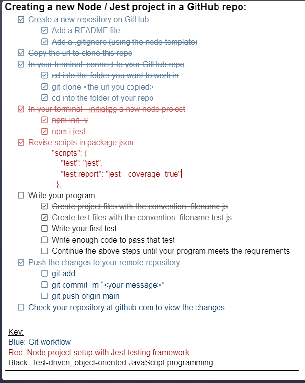

Solid State
Rest API's and CRUD
A REST API (also known as RESTful API) is an application programming interface that conforms to the constraints of REST architecture.
REST stands for representational state transfer and was created by computer scientist Roy Fielding.


CRUD (Create, Read, Update, Delete) is an acronym for ways one can operate on stored data. It is a mnemonic for the four basic functions of persistent storage.
In computer programming, create, read, update, and delete are the four basic operations of persistent storage. CRUD is also sometimes used to describe user interface conventions that facilitate viewing, searching, and changing information using computer-based forms and reports.
Project MagPie
I used express as our middleware and served as our api between our database and client.
What is a README File?
In simple words, we can describe a README file as a guide that gives users a detailed description of a project you have worked on.
Provide a step-by-step description of how to get the development environment set and running. README is helpful To understand our prjoect for contributions made by others, provide instructions and examples so users/contributors can use the project. This will make it easy for them in case they encounter a problem – they will always have a place to reference what is expected by adding visual aids, screenshots. Also if our project will require authentication like passwords or usernames, this is a good section to include the credentials.
Here are a few extra points to note when you're writing your README:
*What your application does(user stories)?
As a user, I want to be able to login to my account, so that I can access my account. As a user, I want my sensitive information encrypted, so that I can have higher levels of account security. As a signed in user, I want to be granted authorization to my movie service, so that I have proper authorization to view it. As a user, I want to have my favorite movies saved, so that I can access them at a later time. As a user, I want to have various subscription options, so that I pick from a selection of choices.- GitHub repository:
https://github.com/Magpie-Movies/MagPie.git - To run code on your machine, Please do node: app.js and output would be: Server running on port 3000
- Type: http://localhost:3000/ and you will get output: http://localhost:3000/api.html Back to About me
*What technologies you used?
NODEJS, sqlite3, Bootstrap 4, CSS3 and HTML 5, bcrypt, dotenv, express, express-basic-auth, express-jwt, jsonwebtoken, jwks-rsa, nodemon, sequelize.*Some of the challenges you faced and features you hope to implement in the future.
AS a developer learning tokens and authenticating users was a challenge to implement initially. As a backend developer multiple queries and updating tables was an initial challenge for me.- As a product manager looking for features that are in aligin with user's expectation was a challenge for MVP(minimum viable product ).
